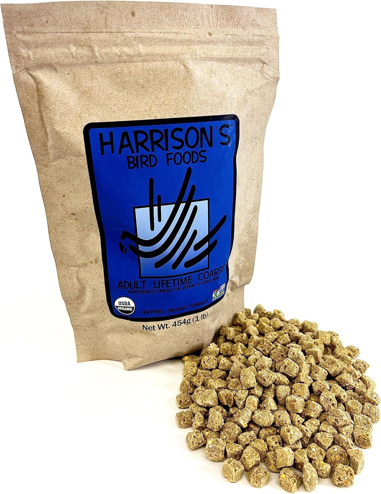
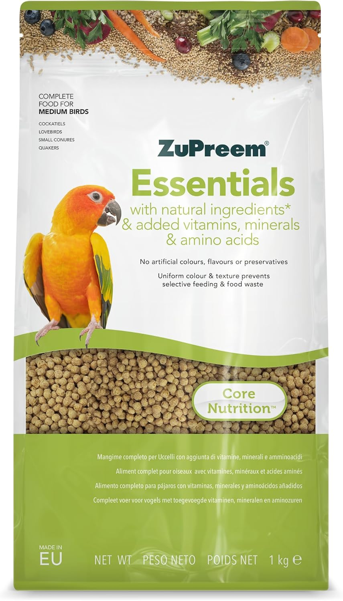
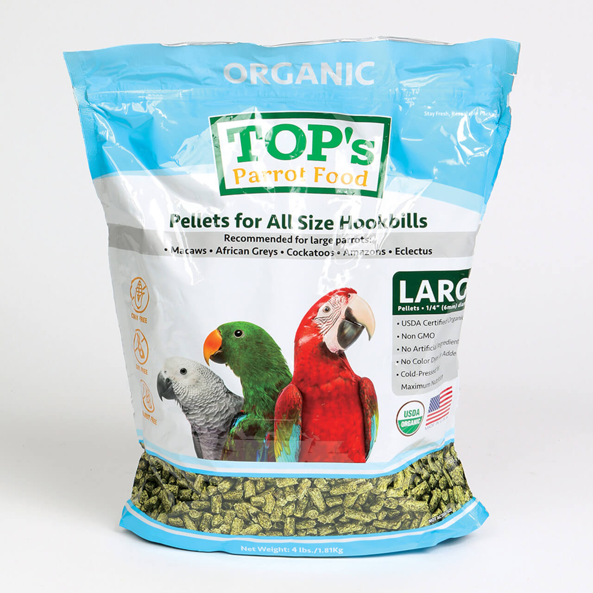
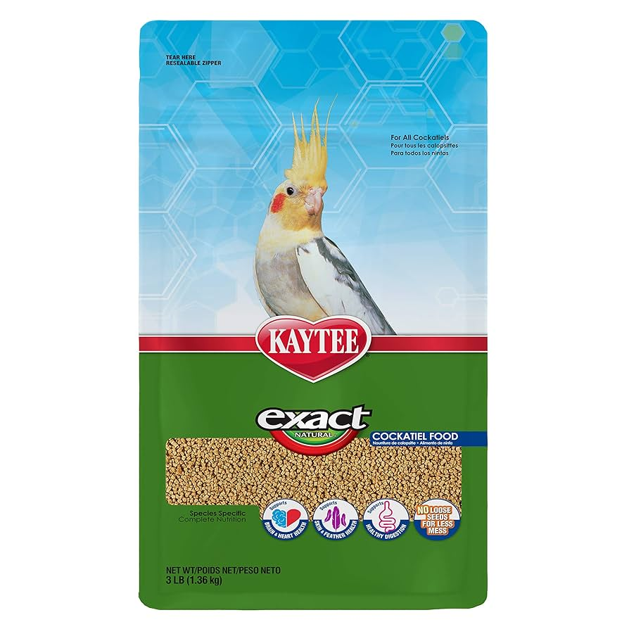
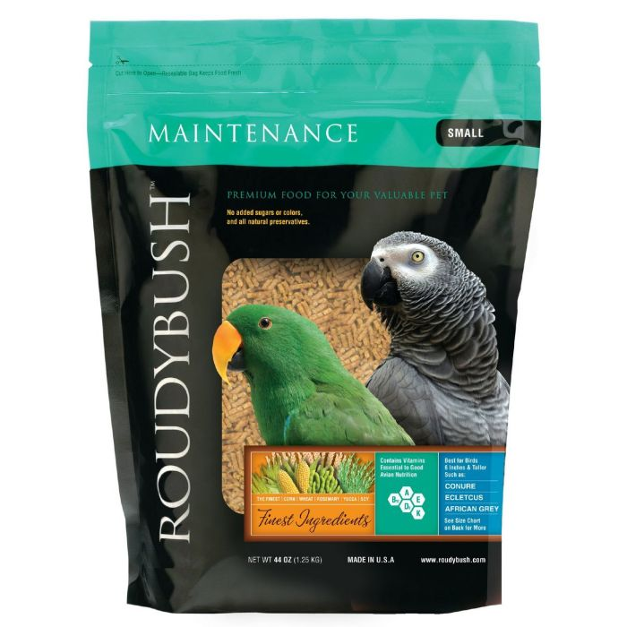

Best Cockatiel Food 2025
Quick Picks for Optimal Cockatiel Nutrition
What's in This Complete Guide
Understanding Cockatiel Nutritional Requirements
Cockatiels are granivorous birds native to Australia, where they consume over 30 different seed types plus seasonal fruits and vegetation. This natural diet provides specific nutrient ratios that commercial foods must replicate for optimal health and longevity.
Essential Nutritional Components
Protein Requirements: Adult cockatiels need 14-18% protein, while breeding pairs require 18-22%. Excess protein can cause kidney stress and behavioral issues, while deficiency leads to poor feather development and reduced immune function.
Fat Content: Optimal range is 8-12%. Wild cockatiels maintain this through seasonal dietary variations impossible to replicate with seed-only diets. Higher fat content leads to obesity, liver disease, and shortened lifespan.
Vitamin A: Critical for immune function, respiratory health, and feather quality. Seed-only diets contain less than 100 IU/kg, while cockatiels require 2,500-5,000 IU/kg for optimal health.
Calcium and Phosphorus: Must maintain a 2:1 ratio for proper bone development and egg production. Improper ratios cause egg-binding in females and metabolic bone disease.
Critical Research Finding
A 2019 veterinary study of 347 cockatiels found that birds fed seed-only diets lived an average of 12.3 years, while those on quality pellet diets averaged 21.7 years - a 76% increase in lifespan.
Pellets vs Seeds: The Scientific Evidence
The debate between pellets and seeds isn't about preference—it's about survival. Multiple peer-reviewed studies demonstrate clear health advantages for pellet-fed birds across all major health metrics.
Product Comparison: At-a-Glance
| Product | Price Range | Protein % | Fat % | Key Features | Best For |
|---|---|---|---|---|---|
| Harrison's Adult Lifetime | $$$$ | 14% | 6% | Organic, vet-formulated | Long-term health |
| Zupreem Natural | $$ | 14% | 4% | No artificial colors | Budget-conscious owners |
| TOP's Parrot Food | $$$$$ | 14% | 12% | Cold-pressed, probiotics | Premium nutrition |
| Kaytee Exact Natural | $$ | 16% | 4% | Fruit flavors | Transitioning birds |
| Roudybush Daily | $$$ | 15% | 4% | Minimal ingredients | Sensitive birds |
Top 5 Cockatiel Foods for Optimal Health
1. Harrison's Adult Lifetime Coarse - Best Overall
Developed by avian veterinarians, this organic formula uses whole grains and contains no artificial colors, flavors, or preservatives. The coarse size is ideal for cockatiels, encouraging natural foraging behaviors while providing complete nutrition.
Pros
- Veterinarian-formulated with 30+ years research
- Certified organic ingredients
- No artificial preservatives or colors
- Appropriate pellet size for cockatiels
- Excellent long-term health outcomes
Cons
- Higher price point than conventional foods
- Some birds resist transition initially
- Shorter shelf life due to no preservatives
- Limited availability in some areas
Best For: Health-conscious owners prioritizing long-term wellness and natural ingredients.
Check Current Price on Amazon2. Zupreem Natural Medium Bird Food - Best Budget Option
This balanced pellet formula provides essential nutrients without artificial colors or flavors. The medium size works well for cockatiels, and the affordable price makes quality nutrition accessible to more bird owners.
Pros
- Excellent value for balanced nutrition
- No artificial colors or flavors
- Widely available in pet stores
- Good acceptance rate among cockatiels
- Fortified with essential vitamins
Cons
- Contains some artificial preservatives
- Not organic ingredients
- Higher sugar content than premium brands
- May cause softer droppings initially
Best For: Budget-conscious owners seeking quality nutrition without premium pricing.
Check Current Price on Amazon3. TOP's Parrot Food Pellets - Best Premium Option
These cold-pressed, organic pellets maintain maximum nutritional value through gentle processing. The formula includes probiotics and natural enzymes that support digestive health and nutrient absorption.
Pros
- Cold-pressed to preserve nutrients
- USDA certified organic ingredients
- Contains beneficial probiotics
- No synthetic vitamins or preservatives
- Excellent digestibility
Cons
- Most expensive option
- Requires refrigeration after opening
- Limited retail availability
- Some birds find texture unfamiliar
Best For: Premium nutrition enthusiasts wanting the highest quality ingredients available.
Check Current Price on Amazon4. Kaytee Exact Natural Daily Nutrition - Best for Transition
Specifically designed to help birds transition from seed-based diets, this formula combines familiar flavors with complete nutrition. The pellets are sized appropriately for cockatiels and include natural fruit flavors.
Pros
- Excellent for transitioning from seeds
- Natural fruit flavors encourage acceptance
- Balanced nutritional profile
- Readily available nationwide
- Good palatability for picky eaters
Cons
- Contains some artificial ingredients
- Higher sugar content than ideal
- May cause dependence on flavored foods
- Not suitable as permanent diet
Best For: Birds currently eating all-seed diets who need encouragement to try pellets.
Check Current Price on Amazon5. Roudybush Daily Maintenance - Best for Sensitive Birds
Steam-pelleted for easy digestion, this formula uses minimal ingredients to reduce the risk of allergic reactions. The neutral taste and aroma work well for birds with sensitive digestive systems or food sensitivities.
Pros
- Minimal ingredient formula reduces allergies
- Steam-pelleted for easy digestion
- No added sugars or flavors
- Consistent manufacturing quality
- Good for birds with sensitivities
Cons
- Bland taste may reduce initial acceptance
- Limited ingredient variety
- Higher price than mainstream brands
- May require gradual introduction
Best For: Cockatiels with food allergies, digestive sensitivities, or previous health issues.
Check Current Price on AmazonFrequently Asked Questions About Cockatiel Nutrition
Signs of optimal nutrition include bright, smooth feathers with good color intensity, clear bright eyes, consistent energy levels, and normal droppings (dark green/brown solids with clear liquid). Poor nutrition manifests as dull or brittle feathers, lethargy, frequent respiratory infections, or abnormal droppings.
Yes, mixing high-quality pellet brands can provide beneficial nutritional variety and prevent food boredom. Ensure all brands meet AAFCO standards for complete nutrition. Introduce new brands gradually to avoid digestive upset.
Standard pellets stay fresh 6-12 months when stored in airtight containers in cool, dry locations. Organic or preservative-free brands have shorter shelf lives (3-6 months) and some require refrigeration after opening.
Try different brands, sizes, textures, or transition foods with natural fruit flavors. Some birds respond to social eating or having multiple birds. Never withhold all food to force acceptance. If transition fails after 6-8 weeks, consult an avian veterinarian.
Never feed: avocado (contains persin - fatal to birds), chocolate, caffeine, alcohol, fruit pits/seeds (contain cyanide), onions, garlic, high-salt foods, or sugar-free products containing xylitol.
Related Bird Product Guides


Affiliate Disclosure: ThePetProductLab participates in affiliate programs including Amazon Associates. We may earn commissions on qualifying purchases made through our links at no extra cost to you.